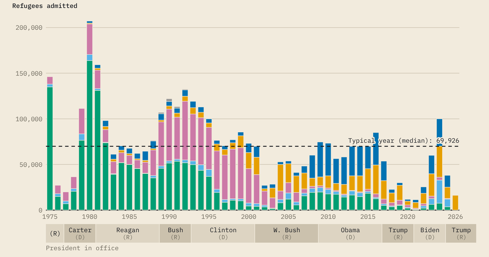

Interactive charts on U.S. refugee admissions, built from the State Department's published figures.

In FY2026, the United States admitted refugees of two nationalities: 16,287 from South Africa and 5 from Afghanistan. From FY2001 to FY2025, refugees of 50 to 85 nationalities arrived every year.